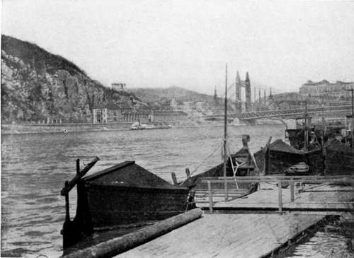

Collecting In The Dobrudscha. Part 4
Description
This section is from the book "Bird-Hunting Through Wild Europe", by R. B. Lodge. Also available from Amazon: Bird-Hunting Through Wild Europe.
Collecting In The Dobrudscha. Part 4
Early in the morning we re-embarked in our lodka, after laying in a stock of bread, chickens, and other provisions ; and, passing out of the entrance of the Danube mouth, set our sails, and steered out into the Black Sea. There was a fresh breeze, and we bowled along at a good speed to the southwards, making for the southernmost arm of the Danube Delta-the St. George's Arm.
M. Panaitescu had left us before reaching Sulina, and had returned to Tulcea. As without him it was impossible to communicate with any of my companions, I picked up in the streets of Sulina, and engaged, a Greek, who could speak fair English, well enough at any rate to act as interpreter. I took him entirely on trust, knowing nothing about him ; but he served me very well. I paid him, I think, four shillings a day ; he ate and slept with the men, and I paid his passage back to Sulina on our return to Tulcea.
On reaching the St. George's Arm about midday, we landed and cooked one of the chickens we had brought with us. These men were wonderfully good cooks. The chickens, roasted over a fire of reeds on a sharpened stick, one end of which was stuck in the ground, were delicious. Of course, living in this open-air life our appetites were good, and I for one was always ready for our midday halt.
From this point we struck off to the southwards, leaving the St. George's Arm near its mouth, making our way through narrow circuitous channels through the Lake of Dranov, towards the large Lake Razelm.
Looking at the map, the spaces between the arms of the Delta might be thought to be dry land. The fact is, there is hardly an inch of dry land ; all is water, vast reed-beds, floating islands, and desolation, inhabited by water-fowl, fish, otters, frogs, and mosquitoes. All night the deafening croak of millions and millions of frogs is unceasing. When once the navigable channels are left one hardly meets a human being. At long intervals, perhaps, a solitary fisherman paddling his lodka may be seen going the round of his nets. Drum-nets are largely used, of great length, and whenever a long row of sticks was sighted above the water, the contents of the net would be investigated, and if there was anything special, like a fine fat Carp, or a Sterlet, it was abstracted for our pot. If by any chance the commissariat was empty, any passing fishing-canoe was overhauled and the best fish taken for our use. Payment was never made, and the men seemed to take it as a matter of course, so I presumed that it was all fair and square.
That certainly could not be said for all the doings of our crew, who on occasions looted right and left, snapping up any unconsidered trifles that were eatable. One evening we were passing a marsh not far from a collection of huts, when they sighted a flock of geese unattended. It was pouring with rain at the time, and we had had a long and wet day's journey; but in an instant two of the men fairly flung themselves overboard, into waist-deep water, chased the geese, like two great boys having a lark, and caught three of them. The inspector made them let one go, but the other two had their heads cut off, and were plucked and in the pot in a very few minutes. There was a trail of goose feathers behind the boat for a mile at least.
Another time the men had been towing against a strong current, and I was having a nap on one side, while the inspector followed suit on the other, where we had made ourselves a comfortable lounge with rugs and coats. Suddenly I missed the ripple of the water against the bows, and there was a sudden mysterious silence. I opened one eye lazily and saw that the boat had stopped and one of the men was in the act of cutting the throat of a sucking-pig under water, so that it shouldn't squeal, while another, that had been already killed in like manner, lay beside him. They had come on a family of piglings with the old sow. These two also went into their omnivorous pot, and I don't think the inspector ever knew anything about it.
I told them I should expect an invitation to dinner for holding my tongue, and suggested that they might capture a cow, for the sake of fresh milk on board. How quickly one becomes demoralized in bad company!
Once or twice our progress in the narrower channels was stopped by a fish-trap barring the whole width of the stream, necessitating a ' portage ' round the obstruction. This was an arduous undertaking, requiring all hands, as the boat was a large one. These fish-traps are ingenious arrangements made of reed-stems in intricate designs, so that the fish can enter, but are unable to escape again. Generally a man or two would be living there in a conical hut of reeds-a most forlorn, miserable existence, devoured by mosquitoes and leeches. One poor old fellow, over seventy years old in appearance, we found alone in a most pestiferous spot, many miles from anywhere. He was too feeble even to pretend to assist us, and too apathetic to do more than look up at us as we passed his lonely abode. The air was perfectly thick with mosquitoes, which fell to with greedy haste at the sight of fresh blood, and while we were busy with the boat they punished us most severely. They must have exhausted the veins of the old fisherman long ago. I wouldn't have spent the night there without a mosquito-net for ten pounds. For some reason the sight of the place, and the old man laboriously catching fish, gave me the horrors, such an impression it made on my mind of unutterable loneliness and desolation.
As soon as we reached open water all sail was set, and we simply tore through the water before the strong wind. Razelm is perhaps ten miles across and thirty or more long, so that we had plenty of room. About half-way over, a small boat was seen under sail on the farther side, and as for some reason the inspector fancied she was carrying a cargo of contraband fish, we altered our course to cut it off. Observing this she also altered her course somewhat, and made for the shore. After an exciting chase of seven or eight miles, during which we gained on her fast, we watched her closely through my glass to see if they were throwing any cargo overboard, and on nearing her fired repeatedly over her with revolvers until they took in the sail, and lay to right in our track. Instead of shortening sail or bearing away a trifle our steersman kept our boat straight for her, crashing into her amidships with terrific force, until her timbers cracked, and she heeled over so much that I thought she was sinking. There were no fish visible, only two Bulgars, looking rather aggrieved, as well they might.

Fish-trap on the danube-our boatman trying to get A fish for dinner
Fish-boats off the quay, budapest
Continue to:
- prev: Collecting In The Dobrudscha. Part 3
- Table of Contents
- next: Collecting In The Dobrudscha. Part 5